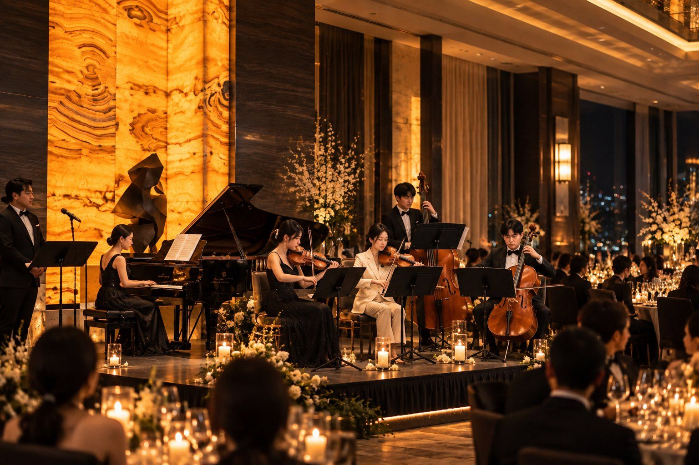

Music · Artists
BELiOR 연주진
Beyond Performance. An Experience. 연주를 넘어, 하나의 경험.
The Ensemble
현악 4중주 편성
BELiOR의 무대는 현악앙상블 TWOTTIVA가 연주합니다. 연주자별 프로필은 확정 후 게재합니다.
Violin I
제1 바이올린
프로필 준비 중
Violin II
제2 바이올린
프로필 준비 중
Viola
비올라
프로필 준비 중
Cello
첼로
프로필 준비 중

The House
무대에서 시작된 하우스
실제 무대에서 태어난 BELiOR는 라이브 음악을 프라이빗 이벤트 연출과 예술 기획, 오브제, 그리고 하루 저녁보다 오래 남는 시각 언어로 넓혀 갑니다.
무대는 TWOTTIVA가 연주합니다
BELiOR의 음악은 서울에서 활동하는 현악앙상블 TWOTTIVA(뚜띠바 현악앙상블)가 연주합니다. 2021년부터 호텔·기업·공식 행사 무대에서 쌓아 온 TWOTTIVA의 연주 위에, BELiOR가 공간과 오브제와 연출을 더합니다.
- KBS홀 한·체코 수교 35주년 기념음악회
- 한국여성공인회계사회 정기총회 및 회장 이·취임식
- 호텔 연회 · 기업행사 · VIP 리셉션
- Brand Gala Dinner Show · Seoul
공연 이력은 TWOTTIVA와 각 연주자의 이력입니다.